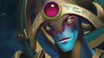

 Oracle 
| Базовые характеристики | Дерево талантов |
| Сила | Ловкость | Интеллект | Скорость передвижения | Поле зрения | Броня | Базовое время атаки | Урон | Замах на атаку | | 20 +2.4 | 15 +1.7 | 26 +3.8 | 295 | 1800/800 | 3.1 | 1.7 | 39 - 45 | 0.3 |
| | +1.5 сек. действия False Promise | 25 | +1.5 сек. действия False Promise | | +30% к урону врагам от Purifying Flames | 20 | +30% к урону врагам от Purifying Flames | | –1.25 сек. перезарядки Purifying Flames | 15 | –1.25 сек. перезарядки Purifying Flames | | False Promise даёт +10 брони | 10 | False Promise даёт +10 брони |
|
| Fortune"s End | СПОСОБНОСТЬ: Channelled, Направленная на героя ДЕЙСТВУЕТ: на Героев УРОН: магический СКВОЗЬ НЕВОСПР. К МАГИИ: Нет МОЖНО РАЗВЕЯТЬ: Да | ПРЕРЫВАЕМАЯ — собирает мощь героя в заряд выжигающей энергии, который накладывает оцепенение на цель и врагов вокруг неё, наносит им урон и снимает с них положительные эффекты. Если целью является союзник, то способность только развеет отрицательные эффекты. Длительность оцепенения врагов увеличивается со временем применения способности.ТИП РАЗВЕИВАНИЯ: нормальное | МАКС. ДЛИТЕЛЬНОСТЬ: 2.5 УРОН: 100 / 160 / 220 / 280 МИН. ДЛИТЕЛЬНОСТЬ ОЦЕПЕНЕНИЯ: 0.75 МАКС. ДЛИТЕЛЬНОСТЬ ОЦЕПЕНЕНИЯ: 2.75 РАДИУС: 300 CAST POINT 0s | Перезарядка: 15 / 12 / 9 / 6 Стоймость маны: 100 | | Астральная сфера трещит от мощности, и из неё вырывается чистая энергия, временно разрывая связь врага с его собственным телом. |
| | Fate"s Edict | СПОСОБНОСТЬ: Направленная на героя ДЕЙСТВУЕТ: на вражеских Героев СКВОЗЬ НЕВОСПР. К МАГИИ: Нет МОЖНО РАЗВЕЯТЬ: Да | Наполняет цель счастьем, обезоруживая её и даруя сопротивление магии в 100%. Можно применять как на союзников, так и на врагов. | ДЛИТЕЛЬНОСТЬ: 3.5 / 4.0 / 4.5 / 5.0 CAST POINT 0.3s | Перезарядка: 17 / 14 / 11 / 8 Стоймость маны: 50 | | Нерушимое пророчество гласит: не страдать от магии избранному бойцу. Что же касается других страданий... |
| | Purifying Flames | СПОСОБНОСТЬ: Направленная на героя ДЕЙСТВУЕТ: на союзников УРОН: магический СКВОЗЬ НЕВОСПР. К МАГИИ: Нет МОЖНО РАЗВЕЯТЬ: Да | Выжигает скверну цели, нанося ей значительный магический урон, а затем постепенно восстанавливает её жизненные силы. Количество восстанавливаемого здоровья больше нанесённого урона. Можно применять как на врагов, так и на союзников. | Лечение от нескольких применений Purifying Flames складывается. | УРОН: 90 / 180 / 270 / 360 ЛЕЧЕНИЕ В СЕКУНДУ: 11 / 22 / 33 / 44 ВСЕГО ИЗЛЕЧИВАЕТ: 99 / 198 / 297 / 396 ДЛИТЕЛЬНОСТЬ: 9.0 CAST POINT 0.15s | Перезарядка: 2.5 Стоймость маны: 75 | | Как зеркальные залы умножают свет одной свечи, так и разбитые стены вселенной превращают огонёк пророчества в жгучий факел. |
| | Rain of Destiny | СПОСОБНОСТЬ: Направленная на точку УРОН: магический СКВОЗЬ НЕВОСПР. К МАГИИ: Нет | Герой вызывает в выбранной области дождь, который наносит врагам урон и излечивает союзников. Всё лечение, получаемое под дождём, уменьшается для врагов и увеличивается для союзников. | РАДИУС: 650 ДЛИТЕЛЬНОСТЬ: 10 УРОН/ЛЕЧЕНИЕ В СЕКУНДУ: 60 ИЗМЕНЕНИЕ ЛЕЧЕНИЯ: 25% CAST POINT 0.2s | Перезарядка: 40 Стоймость маны: 150 | | Сочетая астральные и атмосферные силы, Нериф искажает единую реальность в парадоксальном союзе. |
| | False Promise | СПОСОБНОСТЬ: Направленная на героя ДЕЙСТВУЕТ: Allied на Героев СКВОЗЬ НЕВОСПР. К МАГИИ: Да МОЖНО РАЗВЕЯТЬ: Нет | Отсрочивает судьбу союзника, откладывая любое лечение и получение урона до конца действия этой способности. Любое лечение во время действия этой способности удваивается. Применение снимает с цели большинство отрицательных эффектов.ТИП РАЗВЕИВАНИЯ: сильное | Отложенные урон и лечение учитывают броню и сопротивление магии. Отложенные урон и лечение сработают, когда цель будет уязвима. | ДЛИТЕЛЬНОСТЬ: 7 / 8 / 10 CAST POINT 0.3s | Стоймость маны: 100 / 150 / 200 | | Предсказания лжепророков и неприятелей обманчивы. |
|
↓ История (биография) персонажа ↓
Веками наследники Великого трона Симурри импортировали оракулов исключительно из Белого инкубатория, что в полых вершинах Гребня фанатиков. Вступительный взнос давался при зачатии эмбриона, а остальное, по доставке к Вратам высеченного короля зрелого, хорошо-тренированного пророка.Бледные предсказательницы выводят всех разрешенных оракулов, рождая и воспитывая их, и своей физической формой оракулы закреплены в мире, общем для большинства из нас. Души же их бродят далеко, едва связанные легчайшими астральными пуповинами. Возращаясь из своих вселенских странствий, пророки вещают огненные слова языками плоти. Симуррийские советники анализируют мистические речи пророков и находят в них видения будущего, дипломатические советы и прочие сверхъестественные надобности, дающие династии Высеченных королей победы при дворе и в бою. И так продолжалось поколениями, заполняя страницы Хроники высеченных королей именами королей-победителей и покоренных ими земель. Так продолжалось до тех пор пока один оракул, по имени Нериф, не прибыл для служения последнему из владык в каменных шлемах.С самого начала пророчества Нерифа были необычны. Казалось, они не предсказывают будущее а вершат его. Странный предсказатель выкаркивал советы когда их никто не просил, и неожиданно симуррийцы оказывались ввязаны в конфликты с новыми врагами. Советники, ощущая угрозу своей власти, быстро осознали в последнем оракуле источник нежелательных свар. Они потребовали его устранения, запросив предсказательниц взять обратно неполноценного пророка и предоставив достойную замену. Но в зловещем сне Нериф описал гибель Инкубатория и через несколько часов пришли вести что страшный обвал погубил древную школу. Опасаясь разделить участь Бледных предсказательниц, советники удалились в свои палаты для совещаний, желая избежать внимания оракула.Но Высеченный король всегда отличался практичностью. Он не полностью доверял своим сверхосторожным Советникам. Оракул такой редкости, думал он, должен быть использован для расширения владений. Исходя из этого, он сместил своих излишне робких советников и приблизил Нерифа. Плохо понимая свойства Нерифа, он попросту заявлял о своих желаниях и вынуждал Нерифа высказать эти желания как предсказания.Сначала все шло хорошо. Последний из Высеченных королей хвалился что взяв себе баловня судьбы он овладел самой судьбой. Следовала бы принять за предупреждение, когда накануне вторжения в земли Неудовлетворимого сатрапа, он пытался выудить у своего оракула предсказание несомненной победы, но Нериф лишь негромко прошептал, «все может быть». Более твердых слов король не смог заставить слететь с его губ. Тем не менее, король был уверен в своем войске. Сатрапия не имела выходов к морю, была слабо вооружена и лишена всех потенциальных союзников. Слова «все может быть» Король понял как то, что с перевесом в военной мощи, его план не несет серьезного риска.Конечно, теперь мы знаем что он должен был понять слова предсказателя более буквально. Даже при тщательном изучении Аннотированных анналов возможного, то что произошло на поле брани у дворца Неудовлетворимого сатрапа почти невозможно представить. Было похоже, что среди резни битва начала раздваиваться. В каждый решающий момент реальность разделялась и распадалась на осколки. Отступающие и падающие бойцы в тоже время держались крепко и смело вступали в бой. Разделилось и сознание солдат, они чувствовали себя и живыми и мертвыми, существующими и несуществующими. Победа и поражение разделились, и то и другое ощущалась одновременно обоими сторонами. Вселенная обратилась в зал зеркал, каждое из них бесконечно разбивающееся.Непосредственным эффектом происходящего стало сумасшествие. Не в силах понять состояние победы и поражения одновременно, сознание Высеченного короля распалось на лоскуты безумства. Наивному сатрапу досталось не меньше. Противоположные реальности продолжали разделяться и разделяться, как эхо они заполняли бесконечные варианты случившегося, каждый населенный непонимающими жителями которые вскоре потеряли способность кормить себя, одеваться, защищаться или размножаться обычным образом.Тем не менее, задолго до того как последствия случившегося полностью проявились, цимуррийские советники схватили Нерифа, связали его, заткнули рот и вышвырнули из своей вселенной на барке способной пересекать измерения, в надежде навсегда оставить его где-то где он не сможет им навредить. Конечно, для них это было слишком поздно. Возможно, для нас тоже.